Systems · Automation · AI // Kuala Lumpur
Xavier Tan
I used to be lazy — always finding ways to work efficiently. Now I find most people work hard, but not efficiently.
![Xavier Tan, photographed against a dark backdrop in a burgundy three-piece suit.]()
No degree, roughly three years of formal experience, self-taught.
I build with AI tooling — Claude Code and similar — and I would rather state that plainly than have it discovered later. It is how one person ships a 51,000-line ERP across three countries.
The systems below are in production. The architecture decisions are mine, and I will walk through any of them.
Five systems
What I've built
Five systems, each with its own page
Creator ERP
Multi-country influencer-marketing ERP replacing spreadsheet-and-WhatsApp campaign coordination with one system of record across Indonesia, Malaysia and Vietnam.
WA Agent
Self-hosted, multi-tenant WhatsApp AI sales and support assistant. Answers trilingually from an operator-controlled knowledge base and captures structured leads.
Endorsement Platform
The system the ERP replaced. A five-layer operations platform built entirely on Google Apps Script and Sheets — and the reason I know when spreadsheets stop being enough.
Extractor / Scraper
Two Chrome extensions solving the same extraction problem by deliberately different routes — DOM scraping with fallback chains, and a reverse-engineered signed API.
Property Tooling
Two tools for one property hunt — one that searches every new launch in Kuala Lumpur and Selangor on real walk and drive times, and one that takes the four survivors and compares them on the facts no listing carries.
Skills index
What I can do
Looking for one particular skill? Go straight to it
| Skill | Where I did it | Go to |
|---|---|---|
| Database-level authorisation | 240 RLS policies, six portals, one schema | Creator ERP · 01 |
| Multi-market systems | one value drives currency, tax, paperwork | Multiple Country · 02 |
| Requirements → system | 12-stage pipeline across 74 columns | Endorsement Platform · 02 |
| Security by construction | withheld columns structurally absent | Endorsement Platform · 03 |
| AI agents & LLM integration | three modes on one engine | WA Agent · 01 |
| Configuration over code | engine repointed at a client's own sheet | Maya · 02 |
| API & reverse engineering | request signing replaces a page render | Extractors · 02 |
| Data pipelines | two sources converge on one queue | Extractor · 02 |
| Document automation | contracts assemble from data, no button | Contract · 01 |
| Engineering judgment | a swappable seam, and when not to reuse it | Property Tooling · 02 |
Skills
What I work with
The tools I use
-
Full-stack build
Next.js, React, TypeScript, Supabase/PostgreSQL. Multi-tenant applications with database-level authorisation and role-based portals.
Next.js React TypeScript Supabase
-
Google Apps Script
Production automation: scheduled jobs, external API calls, document generation, checkpoint/resume pipelines.
Google Apps Script
-
Sheets & Excel
Advanced formulas, cross-sheet logic, pivot tables, complex multi-sheet models. Certified — Google Cloud.
Google Sheets Microsoft Excel
-
Scraping & API integration
Manifest V3 extensions, reverse-engineered request signing, bulk extraction pipelines.
Chrome Extension
-
Reporting & dashboards
Making operational and commercial numbers visible, accurate and timely, so the people who own them can act.
Google Sheets Supabase
-
AI tooling
Claude Code, Gemini APIs, MCP, agent workflows. The WhatsApp agent runs its reasoning on Gemini 2.5 Flash.
Claude Code Gemini API NotebookLM MCP
-
Notion, Lark / Feishu
Workspace architecture, database design, operational workflow deployment. Lark is common across TikTok-ecosystem and regional SEA businesses.
Notion
 Lark / Feishu
Lark / Feishu
-
Deployment & hosting
Vercel production deployment, self-hosted Node workers, local databases and routing engines.
Vercel Node.js
-
Company web & email setup
Getting a company online and its mail working: domain registration and DNS, Google Workspace accounts and routing, shared cPanel hosting.
Domains & DNS Wix Google Workspace
![]() Jagoan Hosting
Jagoan Hosting
I can improve the spreadsheets you have today, and I am the person who can rebuild them as a real system when you outgrow them — because I have done exactly that before.
01 · Flagship
Creator ERP
A multi-country influencer-marketing operations platform spanning the full commercial lifecycle — sourcing creators, brand approval, contracting, sample logistics, content review, performance reporting and verification.
- Next.js 16
- React 19
- TypeScript
- Supabase / PostgreSQL
- Tailwind v4
- Vitest
- Vercel
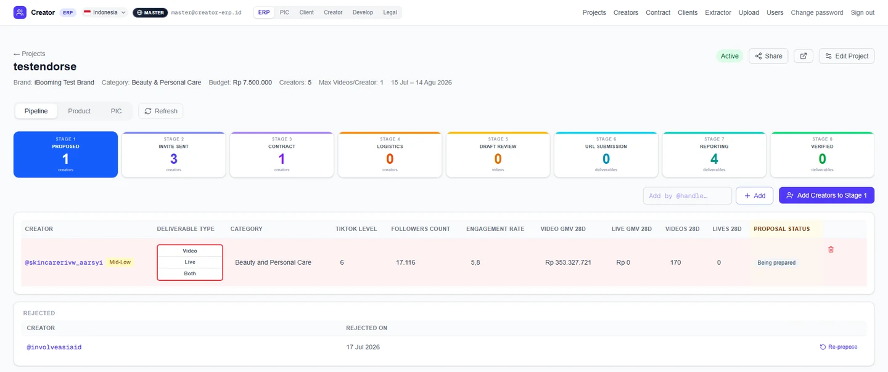
Measured directly from the repository — file counts, migration counts, a live test run, and the generated database type definitions.
PORTALS
Six portals, one database
A brand client can never see another client's campaign — or what the agency pays the creator
How the authorisation is built
Permissions live in the database, not in page code. Access travels through
predicates — can_access_project, is_operator_elevated,
user_role — evaluated by 240 row-level-security policies and 40 database
functions rather than by checks written into each page. Application checks stay correct
right up until someone adds a page and forgets one; with the rule held in the database, a
query written wrongly returns nothing instead of another client's rows. Row-level security
filters rows but not columns, so every client-facing read additionally routes through a
narrow view that does not select the bearer tokens, fee data and banking fields the base
tables carry — the safest version of they must not see this is that it was
never in the result. Country behaves the same way, as an input rather than a label:
ID, MY and VN each decide the currency, the date
locale, which banking fields are required, whether a national ID is collected, which
contract template is used and which numbering sequence it draws from — which is what
keeps a fourth market a configuration exercise instead of a rewrite.
What that buys is work nobody has to remember to do. Contracts assemble themselves the moment the last required field lands, from either the board or the product tab, with no operator "generate" step; statutory withholding is computed at document-build time rather than typed; contract numbers sequence per country; deliverables spawn from the contracted quantities when a creator crosses into production; shipment release is triggered by contract verification rather than by someone flipping a flag; and role changes take effect immediately, including revoking live sessions. The party given the least friction is deliberately the one hardest to chase — creators never authenticate at all, signing contracts, submitting drafts and uploading video through tokenised links without an account ever existing, with uploads going straight to storage through signed URLs that bypass the serverless request-body ceiling. Before any of it, four parties each needed a different slice of the same record, and every slice stayed current only because somebody was re-typing it somewhere else.
The decision worth naming is what came out. An earlier LLM assistant billed tokens per conversation turn and leaned on an unofficial WhatsApp client that carried real ban risk for the number. It worked, and it left the live path anyway, because what it cost and what it risked had stopped being worth what it returned — but it was engineered out rather than deleted: source frozen under a checksum-pinned archive, a four-document restart runbook, the live path collapsed to a single branch, and the whole thing reversible without a database migration. The WhatsApp worker sits outside the web app as a separate 72-file Node process, which is precisely what made pulling it a contained decision rather than a refactor, and what lets a different messaging route go back in the same way. See V3 — the Agentic Journey → What remains is roughly 51,000 lines of TypeScript across 299 source files — 108 React components, 27 page routes, 12 API routes and 158 exported Server Actions over 51 modules, against 40 tables and views built by 190 migrations — with 796 tests across 44 files running in about five seconds, which is the figure that actually matters, because a suite that fast gets run. The executive reporting surface is bilingual, English and Simplified Chinese, with an automated test that fails the build when a translation is missing. 860 commits over roughly two and a half months.
THE REBUILD
Spreadsheets, then an ERP
The team kept working through the switch — nothing moved, nobody retrained
Why V1 was allowed to happen, and why it stopped
V1 automated the spreadsheets the agency already used, so nothing had to be migrated and nobody had to be retrained — which is the only reason it was allowed to happen at all. It ran that way for over a year. Knowing exactly where it stopped is most of what made this one right.
PIPELINES
Two project types on one board
Endorsement carries a contract and CPS does not; a third page runs the stages with an agent
-
Endorsement Pipeline
The Indonesian pipeline as it runs today, from proposal to verified post.
-
CPS Pipeline
Bulk video work at commission, on the same board with three steps taken out.
-
Agentic Journey
The third version: you approve the work, and the agent works the step.
AREA PAGES
Areas of the system
Six more parts, each with its own page
-
Portals
Six front doors onto one codebase, with a route guard rather than a hidden menu.
-
User & Role
One sign-in, and a scope the database enforces rather than the interface suggests.
-
Multiple Country
One switch moves the workspace; country selects currency, tax and paperwork.
-
Contract
Creators sign on their phone through one link, on a contract that wrote itself.
-
Extractor
Metrics pulled on a queue instead of read off a dashboard and retyped.
-
Creator Profile
The talent CRM, and the tier field that reaches forward into the contract path.
01.1 · ERP Area
Portals
Six portals run off one codebase and one database. The masthead re-brands, the navigation changes and the reachable data narrows — but nothing underneath is duplicated.
- 6 portals
- one Next.js app
- one schema
- proxy.ts guard
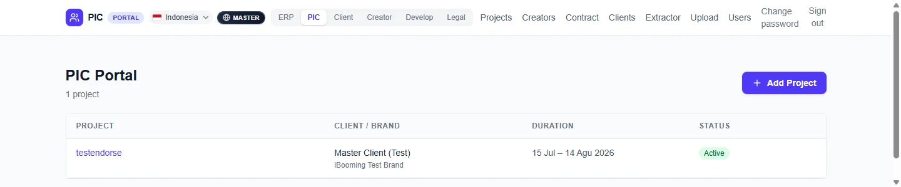
PORTALS
Six front doors, one building
Six kinds of people log in, and each sees only the doorway meant for them
DATA BOUNDARY
Hiding the menu is not the barrier
Typing someone else's web address does not get you in
The same app, wearing a different portal
The badge beside the mark reads PIC Portal rather than ERP, and the active portal moves along the row. It is the same deployment, the same session and the same database — only the frame around them changes.
Six portals could easily have become six applications, each with its own deploy, its own drift and its own copy of the schema. Keeping them as one means a change to how a project is modelled lands everywhere at once, and there is no version of the truth that belongs to only one audience.
The cost of that choice is that the boundaries have to be real. If the portals were separate applications, a mistake would leak within one audience; because they share a database, a mistake would leak across all of them. That is the reason authorisation sits in the data layer rather than in the pages.
01.2 · ERP Area
User & Role
Five role groups share one sign-in and land in five different places. Which portal a person sees, and which rows come back when they ask, are decided by the same single role string.
- 5 role groups
- app_metadata.role
- 240 RLS policies
- Supabase Auth
- 6 portals
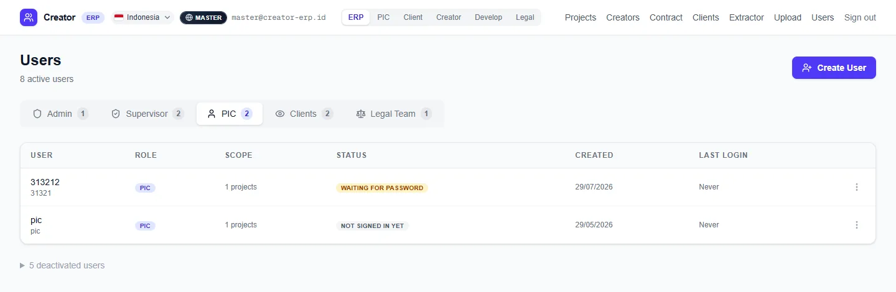
PORTALS
One sign-in, six portals
One login, and you land where you belong — no choosing, no wrong door
ROLES & SCOPE
Same job title, different projects
Two people with the same job title still see only their own projects
The roster as the operator sees it
The counts on the tabs are the roster: eight active users across five groups, with five more deactivated rather than deleted. Keeping them means a departed operator's history stays attached to the projects they ran, which a hard delete would sever.
The status column is the part worth reading. Waiting for password and not signed in yet both mean an account exists that no administrator ever held a password for — users are invited and set their own credential. There is no step where a password is typed by one person and given to another.
The scope column shows the same number the database enforces. It is not a summary computed for display; the row that limits a PIC to their assigned projects is the row that produces the count. A role change takes effect immediately, revoking live sessions rather than waiting for a token to expire.
01.3 · ERP Area
Multiple Country
One control moves the whole workspace between three markets. Country is modelled as a dimension of the data, not as a copy of the application per market.
- ID · MY · VN
- lib/country/types.ts
- tax computed
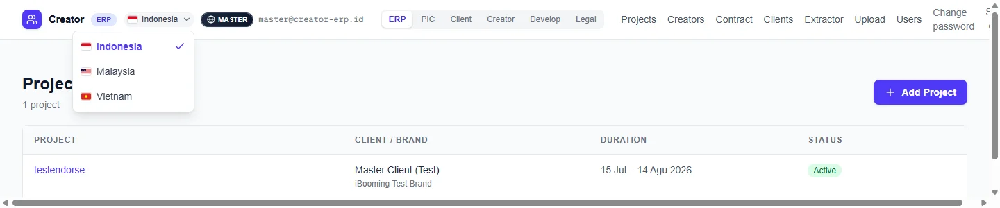
MARKETS
One switch, three markets
Staff work in one place for three countries instead of three separate systems
MARKETS
What country actually decides
Indonesian tax and paperwork happen without anyone remembering the rules
The switch, and why it is not three deployments
Withholding tax is the clearest case for computing rather than typing. It is derived at the moment a document is built, as a fixed percentage of the fee, so the figure on a contract cannot disagree with the fee it was drawn from.
Contract numbers are sequenced per country. That removes a manually kept register, and it means two markets issuing paperwork on the same day cannot collide.
Worth being precise about the limit: the Indonesian deployment is its own repository, Vercel project and database, separate from the Malaysian one. Country-as-a-dimension is what makes three markets tractable inside a deployment — it is not a claim that a fourth market costs nothing.
01.4 · ERP Area · Develop Portal
Endorsement Pipeline
The Indonesian pipeline as it runs today: eight stages from proposal to verified post, messaged by the team, with no AI anywhere in the path.
- 8 stages
- no AI in path
- 3 drop-out points
PIPELINE
Eight stages, run by hand
Anyone can see exactly where a deal has got to, without asking
PIPELINE
Where a creator leaves
A creator who drops out is caught when it happens, not at payment time
The full flowchart, as the team reads it
The published flowchart colours every node by who acts: the team, the creator, the client, the legal function, or deterministic code with no AI in it. Reading it, you can tell at a glance how much of the pipeline is a person and how much is the system.
Two things are tighter here than on the AI version. The shipment reveals itself to the client the moment a contract is verified, with no click to forget. And at posting, the creator submits the post link and ad code through the same upload link they already have, rather than being sent somewhere new.
This diagram lives inside the product rather than in a document. It is written for the operations team and their client, which is why it reads as steps and refusals rather than as architecture — and why the same page carries Malaysia and Vietnam variants behind their own tabs.
01.5 · ERP area
CPS Pipeline
The leaner of the two project types. Where an endorsement is a contracted deal with one creator, CPS is bulk video work at commission — many creators, no agreements, and no money anywhere in the system.
- 5 steps
- no contract
- no money
- live in 3 countries
PROJECT TYPE
The same board, three steps shorter
A second project type on the same board, with the invite, contract and draft steps taken out
THE HANDOFF
Creators hand off to their videos
The first two steps count creators, the last three count videos — and the videos travel alone
BY DESIGN
What it deliberately leaves out
With no contract there is no fee, tax or payout — and the creator never gets a page to open
The rules that bite, and who can open it
The sample decision. Step 2 records a tick and a date, nothing more. There are two honest answers — the sample request was approved, or it was never needed because the creator was always going to post without one. Both count as settled, and a video cannot be recorded until the question is settled. The gate asks only whether it has been answered, never which way it went.
A badge that means something. Step 2 sorts itself into two tables, one for creators nobody has decided on yet and one for those already handled. The number on the step counts only the first, so it reads as creators waiting on you rather than creators on the project — and it reaches zero when you are caught up. A count that never reaches zero is a count nobody looks at.
One link, once. The same video link cannot be used twice in a project; the second paste is refused. Without that rule the client's sales would be counted against two entries. And all six figures — views, GMV, likes, comments, shares and saves — must be present before a video can be verified. Any one missing holds it at reporting with the row flagged.
Who can open it. Each operator is set to endorsement, CPS, or both, as a per-person setting on the Users screen; it governs both what they can open and what they can create. Administrators and master accounts always see everything. The type is live in all three countries.
The honest limitation. Because the system never contacts a creator, nothing in it knows a video is late. If nobody chases, no video arrives and no screen will ever say one is missing. That is a deliberate trade for a type that carries no agreement — but it is a real edge, and worth naming rather than designing around.
01.6 · ERP Area · Develop Portal
Agentic Journey
The third version of the same system. V1 recorded the work after it happened, V2 moved the work inside the ERP, and V3 puts an agent on the steps themselves: the operator approves the work, the agent carries it out, and anything it is unsure of comes back.
- V3 · in build
- LLM-driven
- confidence gate
- hands back on doubt
THREE VERSIONS
Three versions, one set of stages
Each version moved the doing further off the operator, until they only approve it
AGENT DESIGN
When the AI asks a person
When the agent is unsure it asks a person instead of guessing at a creator
The agent journey, stage by stage
The journey is specified before it is switched on: every stage, every decision point and every escalation is drawn and published inside the product, in the same place the team reads the hand-run chart. An agent whose behaviour is only visible in its own logs is one nobody can hold to a standard.
The design work that matters is the part that is expensive to get wrong. Where the agent may act alone, where it must ask, and what a person sees when it does — those are decided up front rather than discovered from transcripts.
Nothing about the eight stages is agent-specific, which is what makes this a version rather than a rewrite. The stages, the board and the database are the same ones V2 runs on; V3 changes who holds the conversation. That is also why the messaging layer can be swapped for whatever route stays inside WhatsApp's rules without the pipeline moving.
01.7 · ERP Area
Contract
Creators sign online, by drawing on their phone through a single link with no account and no signing service. The contract they open assembled itself the moment the last field landed, with the withholding computed and the number drawn from a per-country sequence.
- in-browser signing
- no account, no vendor
- auto-generated
- tax computed
- DOCX + PDF
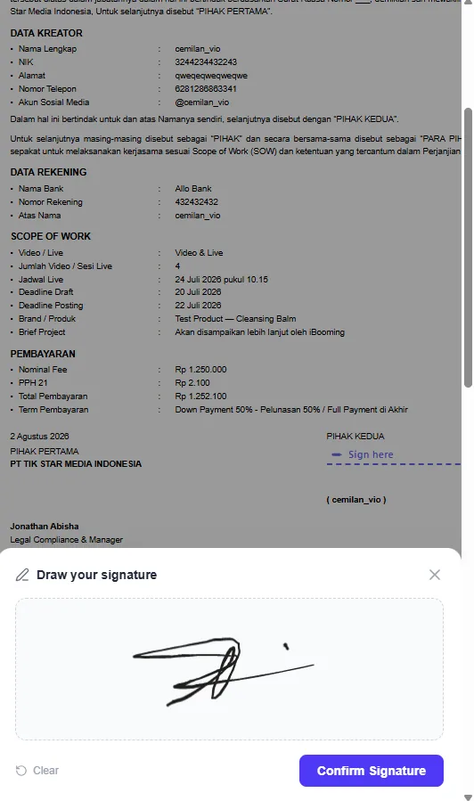
CONTRACTS
Contracts assemble themselves
The contract is ready the moment the last detail lands — nobody drafts it
SIGNING
Signed on a phone, in a minute
A creator signs by drawing on the screen — no account, no app, no signing service
BEARER TOKENS
The link is the key
Anyone holding a signing link could sign, so it never reaches a page that does not need it
WHAT DECIDES
Deal size picks the approval route
Small deals move fast; large ones get the extra approval automatically
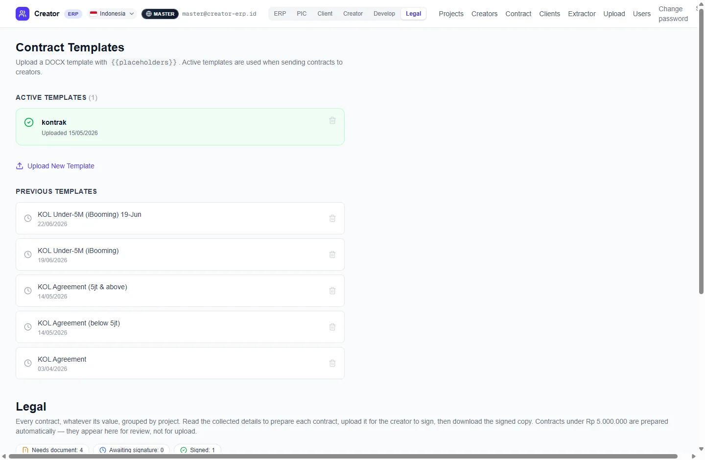
The template library, the signature, and the key
Templates are ordinary DOCX files carrying {{placeholders}}, uploaded
through the interface rather than built into the code. The template history is kept, so
a contract issued in April can still be read against the wording that was active then.
The names in that list are the threshold made visible: separate agreements for above and either side of it, and the smaller-deal variant revised twice in a month. Legal wording changes far more often than software does, which is the argument for keeping it as an uploaded asset.
The signature itself is drawn on a canvas and stored as an image. It used to be stored as the whole pad — a canvas as wide as the signer's screen, measured once at 1392×128 with the ink only 138×85 in one corner, so the image was 93% empty. Four surfaces then displayed it at four different fixed sizes, and because a fixed height with a width clamp does not preserve proportions, the same signature came out squashed by a different amount on each one. Cropping to the ink at capture time fixed all four at once, which is the difference between fixing a rendering bug and fixing its cause.
The signing key is a bearer credential, and the code treating it as one is deliberate. Boards render as client components, so every column a page selects is serialised into the browser payload before any control decides whether to draw a button. A contract with no document still has to appear on the board, saying what it is waiting for — so the fix cannot be to filter the main query, which would hide the creator entirely. Two queries, one wide and one narrow, is what shows the work while withholding the key.
This screen is cropped here because below it sit per-creator rows carrying names and fees, which do not belong on a public page.
01.8 · ERP Area
Extractor
The ERP side of creator metrics: a queue that refreshes profiles from two independent sources and records what it did, rather than operators reading numbers off a dashboard.
- queued refresh
- FastMoss · RapidAPI
- results log
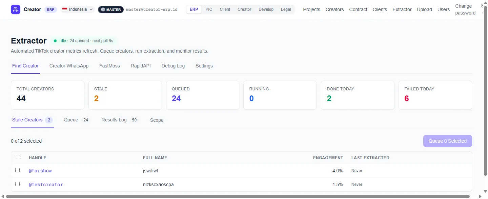
DATA CAPTURE
Metrics arrive, not typed
Nobody copies numbers off a screen, so nobody mistypes them
DATA CAPTURE
Two sources, one queue
Performance figures stay current without anyone chasing them
The extractor dashboard, and the browser tooling behind it
The six counters across the top are the whole operating picture: how many creators exist, how many have gone stale, how many are waiting, how many are moving, and how many succeeded or failed today. Failed today having its own counter is the point — an extraction system without a visible failure count is one that quietly stops working.
The tab row names the two sources directly, and a debug log sits beside them. Being able to see which source answered, and what it returned, is what makes a run diagnosable rather than merely repeatable.
This is the ERP end of the story. The browser-automation work that collects the data in the first place — two extraction strategies built as a Chrome extension against interfaces with no public API — is a separate project, covered in Extractor / Scraper.
01.9 · ERP Area
Creator Profile
The talent CRM underneath every campaign. One record per creator, carrying the identity, vertical and commercial band that the rest of the pipeline reads.
- one record each
- category · level · tier
- shared pool
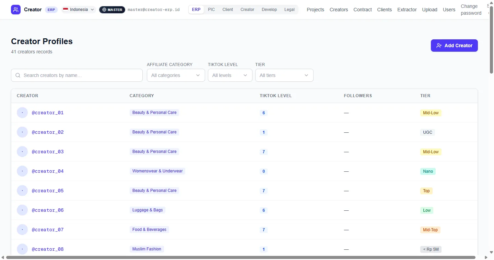
CREATOR DATA
One record per creator
A creator's details are entered once and reused everywhere
CONTRACTS
Creator tier decides the contract terms
The right contract terms follow the creator automatically
The roster, with identities removed
Handles and follower counts in this capture have been replaced with placeholders. The roster is a real client's talent list, and publishing it would disclose which creators the agency works with — each handle is public on its own, but the list is not. Everything structural is untouched.
The three filters are the working shape of the CRM. Category is the vertical a creator sells in, level is TikTok's own grading, and tier is the commercial band. An operator building a shortlist is nearly always intersecting those three.
The pool is shared rather than owned. Creator ownership was deliberately removed, along with the cross-operator approval step it required, so proposing a creator takes effect immediately instead of waiting on another person to release them.
02 · AI & Agents
WA Agent
A self-hosted, business-agnostic WhatsApp AI sales and support assistant. It answers enquiries in the customer's own language strictly from an operator-controlled catalogue, and steers each conversation toward a captured lead.
- Node.js 20
- TypeScript
- Baileys v7
- Express 5
- better-sqlite3
- Google Apps Script
- Gemini 2.5 Flash
- Cloudflare Tunnel
Both agents are running right now. Tap one and it answers you for real, in English, Chinese or Malay.
Read directly from source — line and file counts from the working tree, test counts from test declarations, settings from the schema contract.
AGENT DESIGN
The whole WA agent
Enquiries get answered in seconds, at any hour, in the customer's own language
The problem, and the four decisions that answer it
The problem
Enquiries from paid ads land on WhatsApp, where they go unanswered overnight, get answered slowly, or get answered differently depending on who picks up the phone. Whatever is agreed stays inside a chat thread — so the name, the item, the date and the time never reach anything anyone can report on.
The business pays to generate the lead and then loses it in an inbox. The fix has to work without a WhatsApp Business API contract, without a server to maintain, and without a developer standing by every time a price changes.
Key decisions
-
The business is data, not code
The engine ships neutral and knows nothing about any particular trade. Persona, catalogue, fact base and the definition of a lead — including which fields must be filled before something counts as one — all live in a Google Sheet. A business type is a preset that seeds those tabs:
property,venue,services, or a blank custom start. Adding an industry the system has never seen is one more preset composed from six documented building blocks, not an engine change. The practical effect is that the operator owns the content, not a developer: a price edit in the catalogue tab is live in about sixty seconds, with no build and no deployment. -
A transport layer that knows nothing
The relay that talks to WhatsApp runs on the operator's own PC; all the reasoning runs in Apps Script. The line is drawn so the relay holds no Gemini key, no database credentials and no business logic — it pairs the phone, batches messages and forwards them. The machine most likely to be left unattended in a back office is therefore the one with nothing worth taking, and the brain can be rewritten, or a second client added, without the transport changing at all.
-
Burst debouncing as both cost and quality control
People type on WhatsApp the way they talk — four short messages, not one paragraph. A ten-second per-contact debounce collapses that burst into a single webhook and therefore a single model call. It went in to hold token spend down, but the larger gain was quality: the agent answers the whole thought instead of replying to the first fragment and then contradicting itself twice.
-
Refusing to invent answers
A blank cell in the Sheet means unknown, and unknown means the agent stays silent on that point rather than guessing. It logs a
KnowledgeGapsrow and alerts the control group, so a person answers that customer and the missing fact gets written down once. Handing a confidently wrong price to a buyer is worse than a short silence — and the by-product is a standing queue of what customers keep asking that the business has never documented.
One engine, three modes. A single setting in the Sheet selects the behaviour:
lead_capture answers from the catalogue and extracts booking fields;
answer_handoff answers from a knowledge base and escalates to the right person
by category, relaying their reply back and closing the ticket; and
content_prep is a group assistant that picks photos and drafts captions. Three
products' worth of behaviour without three codebases.
TWO SURFACES
The control group and the customer
Staff drive it with commands in a private group; a customer only ever sees a normal WhatsApp reply
The command set, and what the transport does when things go wrong
The command set. /b and /b50 stage a broadcast and
/yes sends it — and the two must be back-to-back, so any message in
between cancels the staged send rather than firing the wrong post at everyone.
/ignore and /unignore manage the opt-out list.
/status reports relay connection, heartbeat age, queue depth and open
knowledge gaps. /help prints the list. Ordinary chat in the control group is
ignored; only valid commands are processed.
One worker behind both surfaces. One Node process hosts every client's session behind one multiplexed send router and one shared Cloudflare tunnel, with isolated per-project auth stores and secrets. Three sessions run live. The alternative — one relay and one tunnel per client — multiplies the running cost by the client count for no benefit.
Resilience in the transport. A SQLite-backed retry queue with exponential backoff persists both inbound webhooks and outbound sends when Google or WhatsApp is unreachable. Message IDs are deduplicated, and the relay suppresses its own echoes with a five-minute self-sent TTL. Failed sends retry every minute; queue dispatch and a relay health check run every five; a daily 09:00 Drive backup keeps thirty days; and ten minutes of silence triggers a Telegram alert out-of-band, so the channel reporting the outage is not the one that is down.
Compliance built into broadcast. Bulk sends exclude opted-out contacts, enforce a three-day per-contact cooldown, stagger at thirty-second spacing inside a 10:00–20:00 window, and require an explicit preview confirmation before anything leaves. A single opt-out keyword adds the contact to the ignore list and drops their already-queued sends.
Fitting the client, not the reverse. The engine reads and writes by live header rather than fixed column index, so it adopts a client's existing tab names and column layout with no data migration. Human takeover needs no command: when the operator replies manually from their own phone, the relay flags it and the next turn's history carries it. Trilingual throughout, and multimodal — voice notes and images are read directly. Backed by 706 test cases across 73 files.
DEPLOYMENT
Maya — The Bar Agent
Built for one business, then rebuilt so any business could use it
Maya is running right now — ask it about tables, packages or opening hours.
Venue · lead_capture · a lead is a table
The bar and lounge agent. The venue preset makes the default booking a
table, points the document keyword at menu, and shapes the catalogue around
tables, areas and packages with capacity and minimum spend.
Open the Maya deployment →
DEPLOYMENT
Jephie — The Property Assistant
Buyers get the address without waiting for an agent to reply
Property · lead_capture · a lead is a viewing
Answers ad enquiries about specific developments and books sales-gallery visits. The
confirmation names a real place because the address is read from the catalogue's
showroom_address column, and "can I see the floor plan" maps to
brochure.
Open the Jephie deployment →
DEPLOYMENT
Creator Helpdesk Agent
Questions reach the right person instead of a shared inbox nobody owns
Ask it something it knows, then something it cannot — the refusal is the interesting half.
Support · answer_handoff · a win is a resolved question
Answers from a knowledge base instead of a catalogue, and routes to a human by category when it can't. The refusal rule matters more here than anywhere: a confidently wrong answer about how a product works comes back as a second ticket, from someone who now trusts you less. Open the Creator Helpdesk deployment →
DEPLOYMENT
Social Post Agent
A folder of photos becomes a ready-to-post set with a caption, without anyone leaving the group chat
Built for a client, not yet delivered · content_prep
Status. This one is built and not yet delivered, so unlike Maya and the Creator Helpdesk agent there is no live deployment behind it. What it shows is that a third mode fits the same engine without either bending.
Where the images live. Photos are uploaded to Google Drive and grouped into media sets referenced from the Sheet, so the library is curated once and the agent draws from it on every request. Nobody is hunting through a camera roll mid-conversation, and the same set can be reused across posts.
Two different sizes of the same image. The vision call has a byte budget that the deliverable does not. Candidates are downscaled to 1024px thumbnails for the model to look at, while the full-resolution originals are what actually get sent. It is the difference between the selection step working at thirty candidates and failing at eight. Most of the useful engineering in an LLM feature is this — deciding what the model needs to see, which is rarely what the user needs to receive.
Same engine, one setting. Same relay, same 16-tab Sheet, same control group, same
media library, same alerting — content_prep points the agent at a
different goal. A content assistant and a sales assistant share almost everything as
software.
Open the Social Post Agent deployment →
02.1 · Deployment
Maya — The Bar Agent
The venue agent — bars and lounges. A lead here is a table or an area booking. It is also the bot the entire configurable engine was generalised out of.
- venue preset
- lead_capture
- Bookings tab
- MediaSets
- Gemini 2.5 Flash
LEAD CAPTURE
What counts as a booking
A booking only counts once the three details a venue actually needs are confirmed
The venue preset, and where the engine came from
The venue preset makes the default booking a table, points the document
keyword at menu so "what's on" sends the right PDF, and shapes the catalogue
around tables, areas and packages with capacity and minimum spend.
Maya was built first, as a single-domain venue bot — it knew about tables and minimum spends because those things were written into it. The business-agnostic WA Agent was then adapted out of it; the repository records the lineage in its own words, as a bot "generalised from a single-domain bot into a configurable base".
Build the specific thing, discover from running it which parts were actually specific, then rebuild so those parts are data. Standing up a fourth deployment on the result needed no engine change — which is the only real test of whether the split was drawn in the right place.
CLIENT SHEET
Using the client's existing spreadsheet
The venue keeps its existing spreadsheet — nothing had to be moved
Why this is the real test of the configuration layer
This deployment does not use the engine's default lead tabs. It points
lead_tab and confirmed_lead_tab at the venue's own
Bookings and ConfirmedBookings, and because reads and writes
resolve by live header rather than fixed column index, it runs on the sheet layout the
venue already had. No migration, no renaming, no asking the client to adopt my schema.
02.2 · Deployment
Jephie — The Property Assistant
The property agent. It picks up enquiries coming off listing ads and turns them into sales-gallery viewings, in whichever of three languages the enquiry arrived in.
- property preset
- lead_capture
- showroom_address
- brochure
- MediaSets
LEAD CAPTURE
What counts as a viewing
A viewing is booked without an agent typing the address again
The property preset, and how the ad does the routing
The property preset makes the booking a showroom visit and reads its address
from the catalogue's showroom_address column, so the confirmation names a
real place. The document keyword maps to brochure, which is what turns "can
I see the floor plan" into the project's PDF landing in the chat. Name, date and time
confirm the viewing; the phone number comes from WhatsApp itself.
The ad carries a WhatsApp click-to-chat link that pre-fills a catalogue code — the
customer taps it and their first message arrives reading something like
Hi, I'm interested in [SKY01]. So the opening reply is already about the
right development, with the right price and the right gallery address, before anyone has
typed a question. The routing problem is solved in the ad rather than in the conversation.
PERSONA
Staying on topic is a setting, not code
It stays on topic because the operator wrote the rule, not a developer
The precise version, which is the interesting part
This agent stays on the development the customer asked about. It will not volunteer other projects, and when someone's stated need clearly does not fit, it asks before suggesting alternatives rather than pivoting to a sales pitch.
The precise version matters, because it is the interesting part: there is no per-contact lock in the engine. The whole active catalogue is injected on every single turn, and the moment a customer asks what else is available, the agent helps across all of it. The focus is a line in the persona — a setting an operator can soften or remove — not behaviour hard-coded into the engine. Sales discipline belongs to the business, not to me.
02.3 · Deployment
Creator Helpdesk Agent
The support agent. It answers from a knowledge base rather than a catalogue, and when it cannot answer, its actual job is to reach the right person quickly.
- answer_handoff
- KnowledgeBase
- category routing
- reference codes
- ticket close
DEFINITION OF DONE
Answering, not selling
Success here is a question answered, not a sale — so it stops selling
What changes, and what routing replaces
For Maya and Jephie, a conversation has gone well when it ends in a booking. Here it
has gone well when a question is resolved and nobody had to chase it. That is one setting
on the same engine — answer_handoff instead of
lead_capture — and it changes what the agent looks for, what it
escalates and what it writes down, without changing a line of the transport, the schema
or the alerting.
An enquiry is matched to the category that owns it and forwarded to that person with a reference code attached. Their reply is relayed back to the customer, and the ticket closes. What that replaces is the usual arrangement — a shared inbox, somebody deciding by hand who should take each message, and no record afterwards of how long any of it took.
REFUSAL RULE
Saying “I don't know” beats guessing
Customers never get a confidently wrong answer
Why it is worth more on a support deployment
The same discipline applies as everywhere else in the engine: anything not on file
produces silence to the customer, a KnowledgeGaps row and an alert to the
control group, rather than a plausible guess. On a support deployment that is worth more
than it is on a sales one. A confidently wrong answer about how a product works does not
end the conversation — it comes back as a second ticket, from someone who now
trusts you less.
02.4 · Deployment
Social Post Agent
The one that never speaks to a customer. It sits in a staff group, draws photos from a cloud library the team uploads to, and hands back a chosen set with the caption already written. Built for a client, not yet delivered.
- content_prep
- @a trigger
- Gemini vision
- MediaSets
- in-chat rewrite
OUTPUT
How it is used
Someone asks in the group and gets a finished set back, without opening a design tool
Two different sizes of the same image
Someone types @a in the group. The agent evaluates up to thirty candidate
images, selects a varied subset without near-duplicates, and drafts a caption in the
house voice. If the caption is not right, it is rewritten in the thread rather than
regenerated from nothing — the point is to finish a post, not to admire a first
draft.
The vision call has a byte budget that the deliverable does not. So candidates are downscaled to 1024px thumbnails for the model to look at, while the full-resolution originals are what actually get sent to WhatsApp. It sounds small, and it is the difference between the selection step working at thirty candidates and failing at eight. Most of the useful engineering in an LLM feature is this — deciding what the model needs to see, which is rarely what the user needs to receive.
THE ENGINE
One engine, three products
A new use is a setting, not a new product to maintain
Why the mode boundary is in the right place
Nothing underneath changes. Same relay, same 16-tab Sheet, same control group, same media library, same alerting — one setting points the agent at a different goal. A content assistant and a sales assistant have almost nothing in common as products, and share almost everything as software. That they could sit on one engine without either bending is what convinces me that the mode boundary was drawn in the right place.
03 · The system the ERP replaced
Endorsement Platform
A five-layer influencer-marketing operations platform built entirely on Google Workspace — coordinating creators, brand clients, an internal account team and a warehouse, where each party needs a different slice of the same record.
- Google Apps Script (V8)
- Google Sheets
- Docs API
- Drive API
- LockService
- Time-based triggers
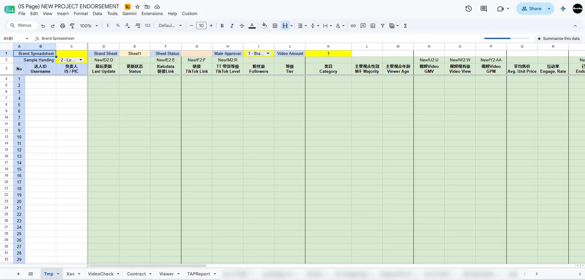
Every figure countable in the code or configuration, and recounted in the live sheets.
THE PROBLEM
The problem
One creator's bank details stopped being typed into three different places
ARCHITECTURE
How the five parts connect
48 brand clients see their own live campaign, with no app to log into
DATA BOUNDARY
The client boundary
A mis-shared link cannot leak the agency's margin
What is withheld, and why
The margin being protected is the gap between what the brand pays and what the creator
receives — which is why the rate columns are the ones that never cross. The
client's four write-back columns are read by the campaign tab as
Sheet1!Q3:Q, AB3:AB, AE3:AE and
AH3:AH; everything outside those four is a read-only reflection.
DECISIONS
Key decisions
105 campaigns run on a small script the account managers edit themselves
The three decisions
| Decision | Why |
|---|---|
| Isolation by projection | A leaked link exposes a document that never held the data. |
| Configuration as data | Partner IDs, ranges and templates live in cells — 35 KB of script runs 105 tabs. |
| Self-deleting triggers | One shared weekly trigger however many tabs enrol, staying under Google's 20-trigger ceiling. |
AUTOMATION
What actually runs it
Performance keeps updating for six months after a campaign ends, unattended
How it is wired, and what runs it
The Apps Script layer
Nine files, ~35 KB, one menu.
| Module | What it does | Trigger |
|---|---|---|
| Sheet Setup | Applies the protection map — 12 ranges, 4 editors. | Menu |
| Contract | Merges 15 fields into a Docs template, writes the PDF URL back. | Menu |
| RapidAPI Extractor | Weekly engagement pull, checkpointed across the 6-minute cap. | Monday |
| Sheet Name Lister | Roster tab, also =GET_SHEET_NAMES(). |
Menu / formula |
| Unprotect BK | Splits protections around a column, across all tabs at once. | Editor |
Formula work carrying the load
-
The boundary is where a range stops
G4:Thides rates,AE4:AGhides banking. - Value type is the state A number while pending, a URL once generated — no status column.
-
A custom function feeds finance
=GET_SHEET_NAMES()builds the 105-tab payment roster. -
Computed governance columns
BLcounts revisions,BMelapsed days.
What the captions above leave out. The margin being protected is the gap between
what the brand pays and what the creator receives — which is why the rate columns
are the ones that never cross. On the extractor, a seven-day freshness check makes
re-running harmless and LockService stops a manual run colliding with the
scheduled one. And the client's four write-back columns are read by the campaign tab as
Sheet1!Q3:Q, AB3:AB, AE3:AE and
AH3:AH.
One template, three commercial arrangements. A dropdown in C2
reconfigures the entire logistics section of a campaign: product-only, full fulfilment with
tracking flowing in from the courier sheet, or no physical sample at all. Across the 49
live tabs, 42 run content-only and 7 run full fulfilment. The same tab template serves all
three — the mode decides which columns the protection map leaves editable.
Stage 12 exists because of a gap in someone else's export. Video ID, GMV, View and Like arrive from the TikTok affiliate report. Comment, Share and Collect are not in that export, which is the entire reason the RapidAPI module exists — it fills exactly that three-column gap and nothing more.
Built for the team that uses it. Every operational header is Chinese and English in
one cell, because one roster serves a Malaysian operations team, Chinese-speaking brand
partners and a warehouse without a translation step. Campaign state is encoded in the tab
name itself — (on process), (HOLD), (Finish)
— so the roster reads as a portfolio view with no extra column and no extra tooling.
The creator CRM carries ten paired columns recording which brands each creator has already
worked with and what each of those produced.
Longevity. Four workbooks across four accounts in three departments plus my own, created between December 2024 and June 2025 and all still being edited nineteen months later. It crosses department boundaries and kept working as people changed roles — which is also why its limits were worth taking seriously enough to rebuild against.
04 · Technical depth
Extractor / Scraper
Two browser automation systems solving one operational problem: creator performance data cannot be bulk-exported from either TikTok Partner Center or FastMoss. Both are search-one-creator-at-a-time interfaces with no public API.
- Chrome Extension MV3
- Service workers
- Content scripts
- chrome.alarms
- Google Apps Script
- Vanilla JS
Every interval, cap and count read directly from source.
EXTRACTION
Two strategies, one queue
Data keeps arriving even when a website changes its layout overnight
What the extension has to survive
The problem
The operator keeps a roster of TikTok Shop creators in a spreadsheet and needs each one's commercial performance refreshed on a recurring basis to make partnership, budget and outreach decisions. Neither source will give that up in bulk: TikTok Partner Center and FastMoss are both search-one-creator-at-a-time interfaces with no CSV export and no public API for this dataset.
So the work was a loop — type a username, wait for the page to render, read four to six figures off the screen, transcribe them into the right row, repeat — and separately keep track of who had already been done this month. It is the kind of task that is never urgent enough to fix and never actually finished.
EXTRACTION
Scraping vs reverse engineering
A record that took ten seconds to collect now takes one
How the two strategies differ
Strategy A survives an obfuscated, hash-suffixed DOM through a 7-deep selector fallback chain. Strategy B skips the interface entirely by reconstructing the request signature, collapsing a full page render into a single call.
Key decisions
-
Two deliberately different strategies in one repository
The two extensions solve the same problem by opposite routes, and the repository keeps both. The TikTok extractor drives the site's own search box and walks the results table through a seven-deep cascading selector fallback chain —
.arco-table-tr, then attribute matches, then[role="row"], then a text-density heuristic — because the target ships obfuscated, hash-suffixed CSS classes that change without notice. The FastMoss extractor skips the interface entirely. Reading them side by side is the point: the first is what you build when you have to work through the UI, the second is what you build once you understand what the UI is doing. -
Reverse-engineered request signing
FastMoss signs its API requests with a scheme it calls
fm-sign: sorted-parameter concatenation against a salt, an MD5 digest, then a fold-and-XOR transform over the result. Working that out meant reading the platform's own shipped bundles and re-implementing MD5 inline, in about 150 lines, so the extension carries no dependencies at all.The payoff is architectural rather than clever. A lookup that previously required rendering a full page and waiting five to ten seconds became a single HTTP round-trip — which is the difference between an unattended batch over a long roster being practical and being theoretical.
-
Session-riding instead of credential storage
Both extensions call their targets with
credentials: "include", riding the operator's existing logged-in browser session. Nothing stores a password, an API key or an OAuth token — which removes credential vaulting, token refresh and secrets management from the system entirely, not by solving them but by never having them. The browser is already the auth layer; the extension declines to build a second one. -
Reliability engineering for unattended runs
An automation nobody is watching fails differently from one someone is watching: it does not crash, it hangs, and you find out a week later. So every path carries a deadline — 45-second per-task timeouts, and 15, 20 and 30-second fetch aborts via
AbortController— and every response carries a task-ID guard, so a slow reply belonging to a previous task cannot be written into the current row. Tab closure terminates the batch cleanly, Apps Script document locks stop a scheduled and a manual run corrupting each other's writes, and failures are written back into the row with a failed status. No record is silently dropped, and none is left sitting onProcessing…forever.
The spreadsheet is the entire backend. Google Sheets is simultaneously the job queue, the state store, the results table and the operator console; an Apps Script web app is the API. There is no server, no database and no hosting bill. It also makes a run resumable by definition — the sheet holds the remaining work, so a crashed, closed or interrupted batch recovers by relaunching from the menu, with nothing duplicated and nothing lost.
Batches that continue themselves. The Apps Script returns the next batch of unfilled
rows in the same response that acknowledges the write, so the extension chains straight on
without an operator between batches. Batches are capped at ten with a 2.5-second gap to keep
the target responsive; the TikTok side polls every 60 seconds and shuts itself down after
three idle cycles. Polling runs through chrome.alarms rather than recursive
fetches, and the comment in the source says exactly why: to avoid recursively hitting the
Apps Script quota.
Deciding what needs doing. Rows whose processed date falls outside the current month
are cleared and re-queued automatically, so "what is stale" stops being a judgement anyone
makes. Any tab flagged K1 = "Extract" is scanned and its pending usernames
pulled into the queue, so adding a new roster is a cell edit rather than a code change. The
FastMoss side captures 28-day windows for video GMV, video count, live GMV and live sessions.
Sixteen hand-written files, no build step. Vanilla JavaScript — no framework,
no bundler, no dependencies — so there is no npm install, no CI, and no
supply-chain surface on a tool that runs against an authenticated session. The interface is
a native Sheets menu item, which is what makes it usable by someone who would never open a
terminal.
05 · Two stages of one hunt
Property Tooling
Two tools for one property hunt. The first searches wide across every new launch in Kuala Lumpur and Selangor and tells you how long the walk to the station really takes. The second takes the four that survived and holds them side by side with the photographs attached.
- Next.js 16
- TypeScript
- Leaflet
- GraphHopper
- Vanilla JavaScript
- GitHub Pages
Both are personal projects, built for one buyer and one decision. Neither has users, revenue, or a production deployment, and neither claims any.
THE FUNNEL
Two stages, one hunt
The second tool starts exactly where the first one stops being useful
THE TRADE
Automated at seventy-one, hand-typed at four
The pipeline that makes the first tool work is the wrong tool for the second
THE TWO HALVES
Each tool has its own page
The routing engine and the shortlist comparison, each in full
-
Property Finder
Searching wide, and why a straight-line distance to the station is not one.
-
Property Analysis
Deciding between the survivors on the facts that appear in no listing.
Why these are one project and not two
They were built weeks apart for the same purchase. The first answered a question the portals answer badly — how far is this really from a station — across every new launch in two states. The second answered the question that comes after, once the list is short enough to visit: which of these four do I actually want, and why did I rule the others out.
The interesting part is the seam between them. Having built an automated geospatial pipeline for this exact domain, the obvious move at shortlist stage was to point it at the remaining four. That would have been wrong. Four rows do not repay the cost of a scraper, and the facts that settled the decision — a balcony facing a graveyard, three lifts serving forty floors — exist in no structured feed at any scale. So the second tool has no pipeline at all, and that is the decision worth defending rather than the pipeline itself.
Neither is production software. One user, one purchase, no deployment beyond a static page. The engineering claims here are about judgment under a real constraint, not about scale, and the sub-pages are written to be read that way.
05.1 · Property Tooling · Search stage
Property Finder
A local-first geospatial decision-support tool for residential property search, built to solve one data-quality problem: property portals advertise straight-line or marketing distances to transit, which are unreliable.
- Next.js 16.2.7
- React 19.2.4
- TypeScript 5
- Prisma 6.5 / SQLite
- Leaflet 1.9
- GraphHopper 10
Personal project — single-user and local-only by design. No auth, no cloud deployment, no user base.
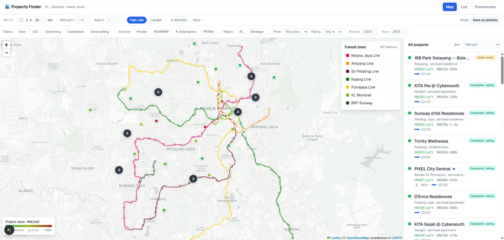
Drawn from source files and a live query against the development database.
TRAVEL TIME
Real travel time, not straight line
Every commute figure is one you could actually drive, not a map illusion
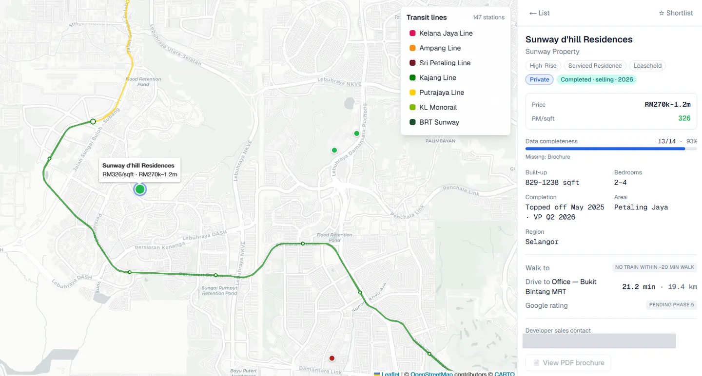
Why the distinction matters
The problem
Property portals advertise a distance to the nearest station, and that number is usually a straight line drawn on a map. A unit listed as 400 m from an LRT station can be a fifteen-minute walk once a highway, a river or a missing footbridge is in the way — so shortlisting on the advertised figure means spending weekends visiting places that were never actually close.
The tool is built around one rule that follows from that: straight-line distance is only ever a prefilter, never a number shown to the user. Every walk and drive time on screen is routed along the real street network. That single constraint dictated most of the architecture.
ROUTING SEAM
The swappable routing seam
The mapping engine was replaced halfway through the build, in one line
How the seam is built, and what it cost
The design specified OSRM via Docker; Docker turned out to be unavailable on the target machine, so GraphHopper was substituted by changing one line. The abstraction paid for itself during the build rather than hypothetically.
Key decisions
-
The seam was chosen before the engine
Routing sits behind a
RoutingProviderinterface and the concrete engine is selected in one line. Nothing in the application or the ten pipeline scripts refers to GraphHopper directly.The design had specified OSRM running under Docker. Docker turned out not to be available on the machine, and GraphHopper went in instead as a local JAR — a one-line change, mid-build. That is the part worth saying plainly: the seam was not justified by a hypothetical future migration, it paid for itself during the build it was written for.
-
Batch enrichment, not request-time computation
Nothing expensive happens while someone is waiting. Scraping, geocoding, route enrichment and ratings all run as offline pipeline scripts that write into SQLite; the application only ever reads precomputed values. The result is that filtering and sorting across eleven dimensions — region, category, scheme, status, price, price per square foot, bedrooms, distance to transit, rating, favourites and completion window — happen client-side with no round-trip at all. Changing the personal drive anchor is the one action that triggers a re-route, and it re-routes everything, because a stale commute figure is worse than an absent one.
-
Failing loudly rather than degrading silently
The enrichment script pings the routing engine before it starts and exits non-zero if it cannot reach it. The tempting alternative — fall back to straight-line distance whenever the engine is down — would have produced a complete-looking dataset that quietly broke the single guarantee the tool exists to make. A pipeline that stops is an inconvenience. One that silently substitutes a worse number is a tool you can no longer trust, and you would have no way of knowing when that started.
-
Null-safe filter semantics
Real scraped data has holes, and a filter has to decide what an unknown value means. Numeric thresholds here exclude a listing only when the value is known and violates the threshold, so a project with no recorded price per square foot survives a PSF filter instead of disappearing from a search it might well have belonged in. Categorical filters do the opposite and demand a positive match. The transit layer keeps the same distinction explicit: not yet routed is a different state from routed, and beyond the 1,700 m walkable cap. Absent data never gets to masquerade as a negative result.
What a full enrichment run costs. Each property takes five foot-routing calls —
one per candidate station from a CANDIDATES = 5 prefilter — plus one
car-routing call to the personal anchor, so a complete run over the current dataset is 426
routing calls. Every one of them is free, because GraphHopper runs locally against a
246 MB Malaysia, Singapore and Brunei OSM extract. A commercial distance-matrix API
bills per element; here the marginal cost of re-routing everything is time rather than
money, which is exactly what makes the anchor freely changeable.
The network is read, not typed. Rail data comes from OSM route relations — line membership, interchange detection and the official Rapid KL line colours all parsed from tags rather than hand-maintained. The script header is explicit that the network is not hand-coded, which matters because hand-coded transit data is correct exactly once. 147 stations across 7 lines with 17 interchanges, against 71 projects.
One paid dependency, deliberately fenced. Google Places is the only API key in the
project. It is called with a four-field mask and maxResultCount: 1, results are
cached into SQLite with the place ID persisted so a repeat run costs nothing, and any 4xx
breaks the loop immediately rather than burning quota against an auth or limit error. Query
construction is context-aware: an under-development project is searched as its sales
gallery, a completed one as itself.
Built, but not populated. Two features are implemented end to end without live data behind them — Google ratings are non-null on none of the 71 rows, and brochure paths are set on none, though 35 PDFs sit in the repository. They belong here as built features, not as data in use. A 14-point completeness score surfaces exactly which fields are missing per property, which is how gaps like these stay visible instead of being discovered at a viewing.
Scope, stated plainly. Single-user, local-only, no authentication and no deployment — by design and by written non-goal, not by omission. The engineering decisions here stand on their own; the project has no users to claim and none are claimed.
05.2 · Property Tooling · Decide stage
Property Analysis
A zero-dependency comparison surface for one real property purchase. Four shortlisted projects held side by side with the photographs attached — including the disqualifying facts that appear in no listing anywhere.
- Vanilla JavaScript
- HTML5
- Hand-written CSS
- GitHub Pages
- No framework
- No build step
Personal project — one buyer, one decision, four candidates. Deployed publicly, but built for an audience of one.
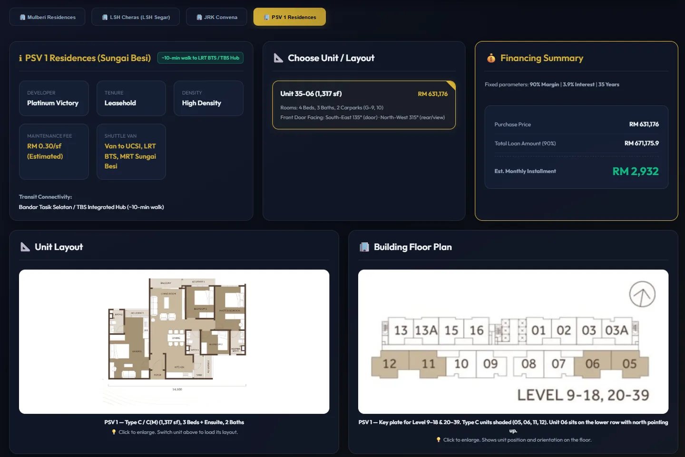
Read directly from the repository on 28 July 2026.
WHAT DECIDES
What decides the purchase
The facts that actually rule a property out are on screen, not in someone's memory
Where the data comes from
The facts that ruled projects out here — a graveyard past the balcony, three lifts for the whole tower — exist in no structured feed, which is precisely why this dataset is hand-typed.
The problem
By the time a property search narrows to four candidates, the portals have stopped being useful. Every listing shows the same five fields, every developer's incentive package is shaped differently — one offers a ten per cent rebate, another absorbs the legal fees and adds air-conditioning — and none of it is comparable at a glance. Meanwhile the facts that actually decide the purchase are not in any listing at all.
The things that ruled projects out here were: a balcony facing a graveyard, a balcony facing a mosque, and three lifts serving an entire tower. You find those by visiting, and then you need somewhere to put them — because six weeks later you will not remember which project had the lift problem, and you will not be able to show anyone why you walked away. This tool is that somewhere.
COMPARISON
Four candidates, side by side
Four shortlisted homes compared on the same terms, in one view
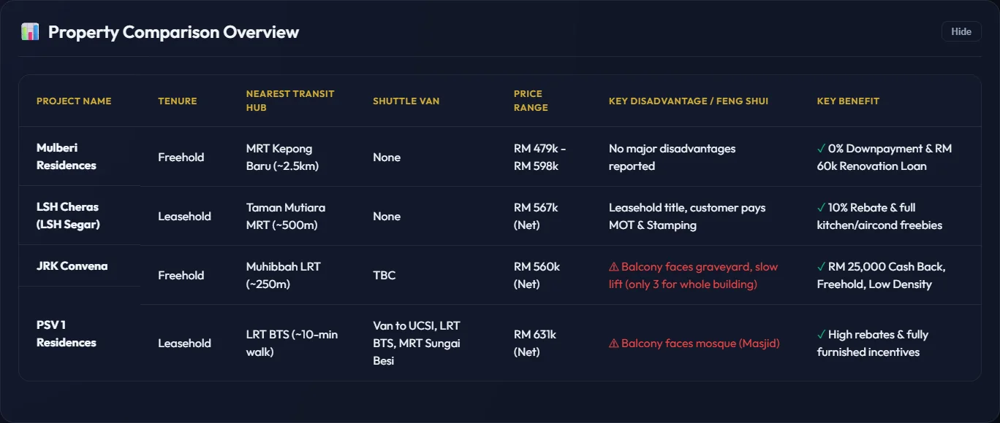
How the comparison is built
Key decisions
-
Not automating, at n=4
The scraping, geocoding and routing pipeline built for Property Finder already existed and already covered this exact domain. It was not reused. At four candidates the automation does not amortise — and more to the point, the deciding facts here are not machine-readable. There is no feed that will tell you a balcony overlooks a graveyard.
So every field is hand-typed, and that is the correct answer rather than a shortcut. Knowing when not to build the pipeline is the judgment worth citing; the pipeline itself is the easier of the two decisions.
-
Store one bearing, derive the other
Each unit records a single number — the direction you face walking out the front door. The rear and view bearing is computed as the opposite, and both are labelled against an eight-point compass in code. Storing the second value alongside the first would have created a field that can silently contradict its neighbour. One authoritative number, one derivation, and the two cannot disagree.
-
Margining the loan the way a bank does
The financing panel computes the loan against the SPA price and displays the purchase price net of rebate, which looks inconsistent until you have sat through the paperwork. Malaysian banks margin against the transacted SPA value, not the discounted figure the buyer actually pays. Getting this backwards understates the loan on every rebate-heavy unit — which is most of them.
-
A photograph behind every claimed disadvantage
A stated drawback with no photograph behind it decays into a vague misgiving within a fortnight. Each disadvantage in the dataset carries an image — the graveyard, the mosque — opened through a lightbox alongside the annotated floor plate showing which stack the unit sits in. The tool's real output is not a recommendation; it is a decision that can still be defended months later.
Three files, nothing else. 474 lines of JavaScript, 263 of HTML, 783 of CSS, no
package.json, no bundler, no transpile step. The data layer is a JavaScript
object literal occupying the first 238 lines of app.js; the deploy pipeline
is git push to GitHub Pages. For a tool whose useful life is one purchase
decision, there is nothing here to patch, upgrade or pay for.
Where the repository's weight actually sits. Roughly nineteen megabytes of it is media — unit layouts, annotated floor plates, site photographs and one developer brochure. The code is the small part, which is the correct ratio for a tool whose value is what it holds rather than the logic it runs.
What it stops short of. It does not work out a true net cost. Every unit carries
five fee-liability fields — who pays the memorandum of transfer, the loan stamp duty,
the SPA legal fees, the loan legal fees and the valuation — plus cashback and size.
All seven are stored for every unit and read by nothing.
calculateMOT(), a correct implementation of Malaysia's tiered stamp-duty
scale, and calculateLoanStampDuty() are both written and never called. The
data model was laid out for a net-cost calculator; the screen shows three figures and there
is no calculator behind them. Groundwork, not a shipped feature — and worth saying so
rather than letting the schema imply otherwise.